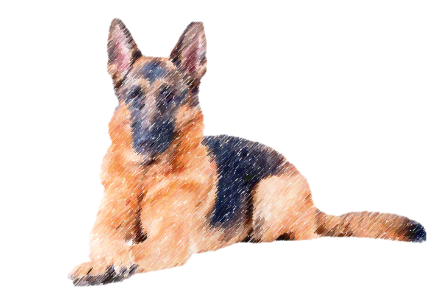
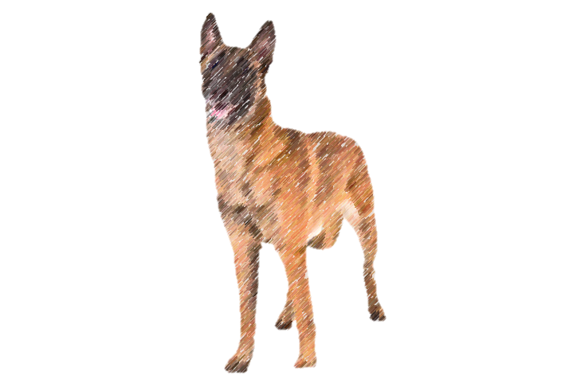
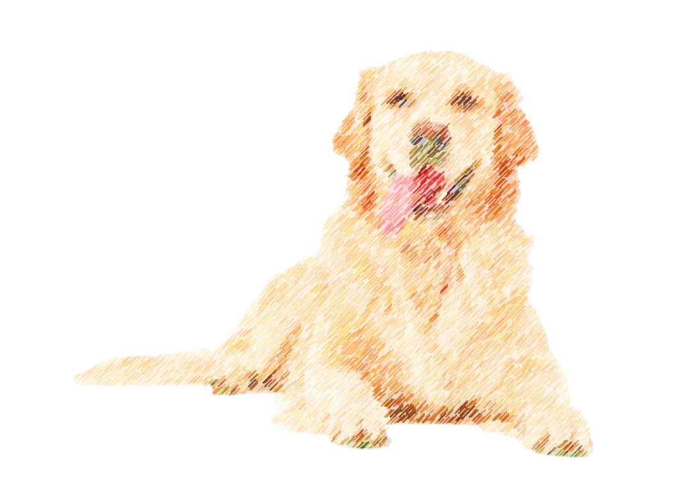
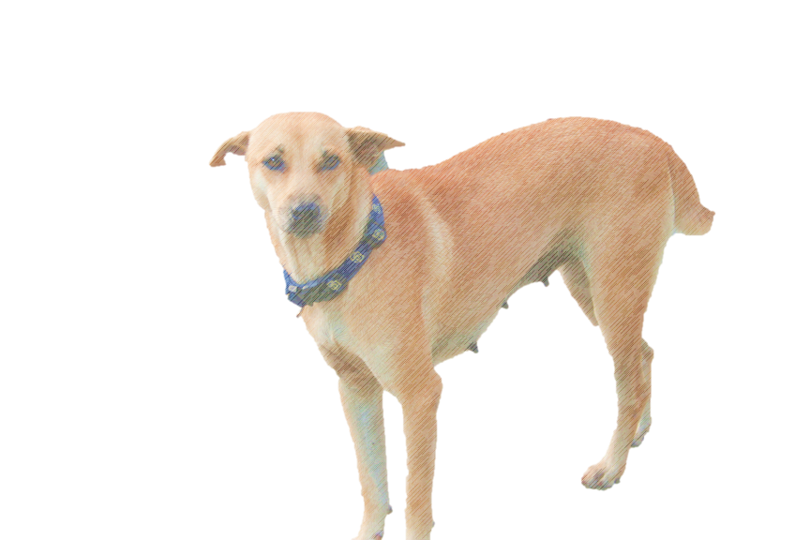
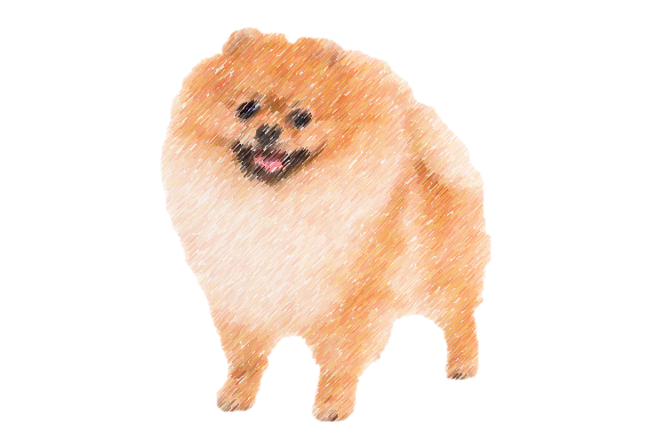

| Portraits | Alias of four-legged friends | Descriptors for thee |
|  | German Shepherd | Quite the friendly fellow, though I shall not completely reccomend it to thee for its abundance of hair burdens many, for it need be groomed and kept in cool climes. If willing to live with these, this may be the friend for thee! |
|  | Belgian Malinois | Protective as most dogs are, its ferocity more abudant than others. This one believes that if in need of a guard, this dog is for thee. Keep in mind, it is quite active, and its owner must be ready to provide on this matter. |
|  | Golden Retriever | A popular family pet with high energy. Be prepared to play a lot, as most dogs require. |
|  | Aspin | How could we forget the aspin? A popular dog breed in this country of Philippines. Often shorthaired, which makes it an optimal companion considering our clime. |  | Pomeranian | All previous canines I listed are quite large breeds. Maybe something smaller would be more to thy taste? Beware, what it lacks in size, it makes up for in noise. |